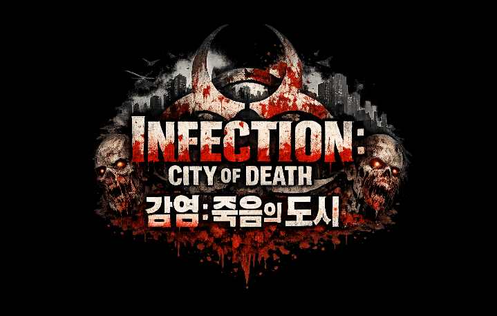
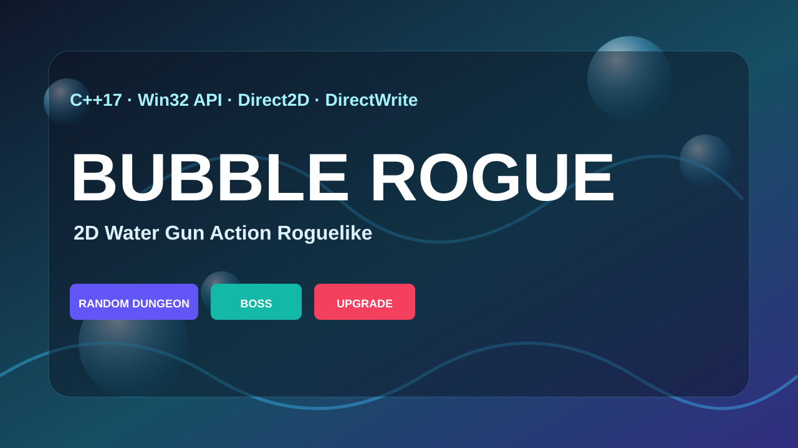

C++
객체지향 문법과 STL을 활용해 게임 로직과 상태 구조를 구현할 수 있습니다.
ProgrammingGAME CLIENT PORTFOLIO
박신우 Park Shin Woo
E-Mail tlsdn0403@gmail.com
GitHub github.com/tlsdn0403



ABOUT ME / PAGE 01
객체지향 문법과 STL을 활용해 게임 로직과 상태 구조를 구현할 수 있습니다.
ProgrammingActor/Component, Collision/Trace, Behavior Tree, Vehicle/Interaction 흐름을 C++로 구현했습니다.
EngineC# 기반 UI/UX, Physics, Multiplayer, WebGL 클라이언트를 개발했습니다.
EngineDirect2D, DirectWrite를 사용해 저용량 2D 로그라이크 게임의 화면과 시스템을 구성했습니다.
Client브랜치 관리, 커밋 단위 정리, 팀 프로젝트 협업 기록을 관리했습니다.
Collaboration플레이 증상을 재현하고, 상태와 충돌 흐름을 따라가며 실행 결과로 구현을 확인합니다.
WorkflowPROJECT INDEX
UE5 · C++ · 협동 TPS
Combat / VehicleC++17 · Win32 API · 1.4mb
Dungeon / Boss
C++ · OpenGL · TCP/IP
Packet / CollisionUnity · WebGL · AI Tool
Board / Turn FSMFlickDom / PAGE 01